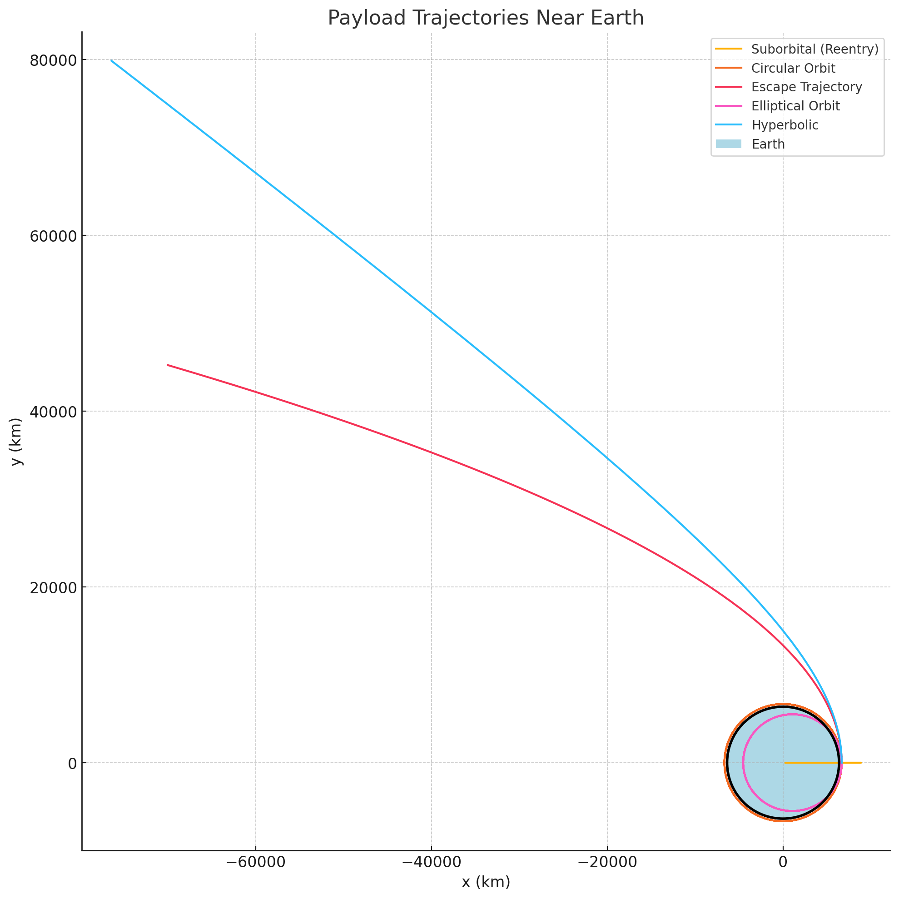

🚀 Problem 3: Trajectories of a Freely Released Payload Near Earth
🎯 Motivation
When an object is released from a moving rocket near Earth, its trajectory depends on initial conditions and gravitational forces. This is essential for understanding reentry, orbital insertion, or escape during space missions.
📚 Theoretical Background
We analyze the motion using Newton's Law of Gravitation:
F = GMm / r²
And the resulting acceleration in 2D space:
aₓ = -GMx / r³ aᵤ = -GMy / r³
Possible trajectory types based on initial velocity:
- Suborbital (Reentry): Falls back to Earth.
- Elliptical Orbit: Closed orbital path.
- Circular Orbit: Special case of elliptical with constant radius.
- Escape Trajectory: Exits Earth's gravity.
- Hyperbolic Path: Faster-than-escape trajectory.
🧽 Python Simulation Code
import numpy as np
import matplotlib.pyplot as plt
from scipy.integrate import solve_ivp
# Constants
G = 6.67430e-11
M = 5.972e24
R_earth = 6.371e6
mu = G * M
def equations(t, y):
x, vx, y_pos, vy = y
r = np.sqrt(x**2 + y_pos**2)
ax = -mu * x / r**3
ay = -mu * y_pos / r**3
return [vx, ax, vy, ay]
def simulate_trajectory(r0, v0, t_max=20000, dt=10):
y0 = [r0[0], v0[0], r0[1], v0[1]]
t_span = (0, t_max)
t_eval = np.arange(0, t_max, dt)
sol = solve_ivp(equations, t_span, y0, t_eval=t_eval, rtol=1e-8)
return sol
# Initial position (300 km altitude)
altitude = 300e3
r0 = [R_earth + altitude, 0]
# Orbital speeds
v_circular = np.sqrt(mu / np.linalg.norm(r0))
v_escape = np.sqrt(2) * v_circular
# Different scenarios
velocities = {
"Suborbital (Reentry)": [0.7 * v_circular, 0],
"Circular Orbit": [0, v_circular],
"Escape Trajectory": [0, v_escape],
"Elliptical Orbit": [0, 0.9 * v_circular],
"Hyperbolic Path": [0, 1.5 * v_circular]
}
# Plot
plt.figure(figsize=(10, 10))
for label, v0 in velocities.items():
sol = simulate_trajectory(r0, v0)
x, y = sol.y[0], sol.y[2]
plt.plot(x / 1000, y / 1000, label=label)
# Draw Earth
theta = np.linspace(0, 2 * np.pi, 1000)
earth_x = R_earth * np.cos(theta) / 1000
earth_y = R_earth * np.sin(theta) / 1000
plt.plot(earth_x, earth_y, 'k', linewidth=2)
plt.fill(earth_x, earth_y, 'lightblue', label="Earth")
plt.xlabel("x (km)")
plt.ylabel("y (km)")
plt.title("Payload Trajectories Near Earth")
plt.axis("equal")
plt.grid(True)
plt.legend()
plt.tight_layout()
plt.savefig("trajectory.png")
plt.show()
🗃️ Resulting Trajectories
This plot shows the payload’s paths depending on initial velocity:

📊 Interpretation
- Reentry: Insufficient speed → object crashes to Earth.
- Circular Orbit: Maintains constant altitude.
- Elliptical Orbit: Varies in distance from Earth.
- Escape: Leaves Earth’s gravity with minimum energy.
- Hyperbolic: Exceeds escape velocity with faster trajectory.
🚀 Applications
- Satellite deployment
- Capsule reentry simulations
- Interplanetary mission design
- Space debris risk analysis